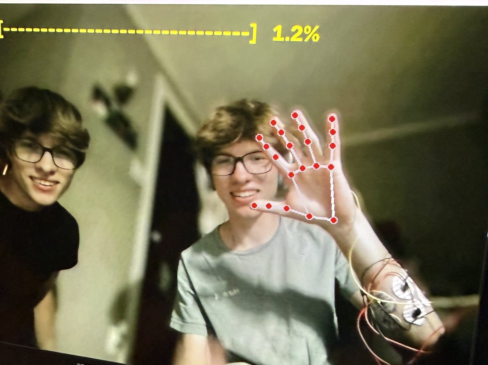

EMG Hand Pose Estimation
A device that reads hand pose from forearm EMG, aimed at prosthetic control and brain-computer interfaces. I am designing the analog front end myself.
Surface EMG from the forearm carries the drive going to the hand, mixed with noise, crosstalk from neighboring muscles, and the summed contribution of every motor unit firing at once. Extracting hand pose from it is a separation problem before it is a machine learning one.
Labeled data without labeling it
Regressing hand pose from EMG needs a ground-truth pose for every EMG sample, and annotating that by hand does not scale to a useful dataset. The rig therefore records both at once: EMG from electrodes on the forearm, and MediaPipe hand landmarks from a webcam pointed at the same hand. The camera labels the EMG, and a session produces paired data requiring no manual annotation.
{kind=link}

Each session opens with a calibration: hold the hand fully open, then close it into a fist. That fixes the two ends of the curl range for the person and for that day's electrode placement. One run came out at 12.0 degrees open and 151.4 degrees closed. Fixing the endpoints per session matters because the raw angle drifts with electrode placement, and a model trained on it would learn the placement rather than the gesture. After calibration the instruction is to move the hand naturally while both streams record.
From there the pipeline runs collection, feature extraction, regression training, and a live mode that runs the trained model against the incoming signal.
Features, and what replaces them
The current implementation extracts time-domain features from the EMG and classifies hand gestures from them. That is sufficient for a system that works end to end, and it is what the collection rig feeds.
I am now implementing convolutive ICA for motor unit decomposition, which is a substantially harder problem. Each electrode sees a convolutive mixture: many motor units firing at once, each one reaching the skin delayed and filtered differently by the tissue in between. Decomposing that mixture into individual motor unit spike trains gives a more direct measure of the neural command than any envelope of the bulk signal. It is considerably harder than feature extraction, and it is not yet finished.
Analog front end
The rig today is four BioAmp Candy sensors into an Arduino Uno R4 Minima. Each sensor applies a fixed gain of 2420 and an analog bandpass of 72 to 720 Hz, which covers the bulk of surface EMG power. The setup records reliably and supports the collection sessions above, but it limits how far the project can go, and the limit is in the sampling.
The R4 has a single ADC behind a multiplexer, so the four channels are read in turn rather than together. That carries two costs: each channel is captured at a slightly different instant, and the per-channel sample rate is the converter's total rate divided by four.
Neither cost is significant for envelope features. Both are significant for convolutive ICA. Separating motor units depends on the delays between electrodes as a potential propagates along the muscle fiber, and a staggered sample clock corrupts exactly those delays. Timing that the acquisition never captured cannot be recovered downstream, regardless of how good the decomposition is.
The next step, and what I am designing now, is a custom board built for parallel channel sampling with every channel on a shared clock. The amplification has to remain low-noise enough to meet the acquisition requirements at the same time, and most of the current component selection is a trade-off between the two.
PythonMediaPipeArduinoSignal processingAnalog circuit design